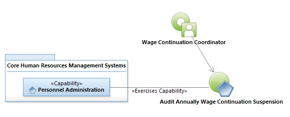
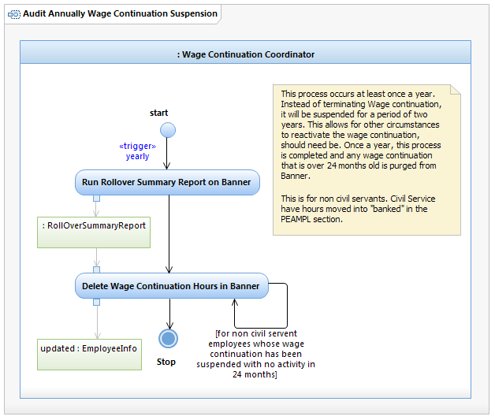

Use Case Model: Audit Annually Wage Continuation Suspension
Architect: Aaron Brown, IT Enterprise Architect Senior
Date Last Modified: 09/01/2012
User Review: Prieta Aguilar, Leslie Milvo, Wage Continuation Coordinator
Date: 11/02/2012
Instead of terminating wage continuation, it is suspended for a period of two years allowing circumstances to reactivate the wage continuation if needed. Once a year, any wage continuation that is over 24 months old is purged from Banner. This is for non civil servants. Civil Service employees have hours moved into "banked" in the PEAMPL section.
Follow link to Role Definitions

Use Case Model: Audit Annually Wage Continuation Suspension

Activity Model: Audit Annually Wage Continuation Suspension